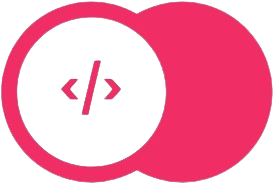
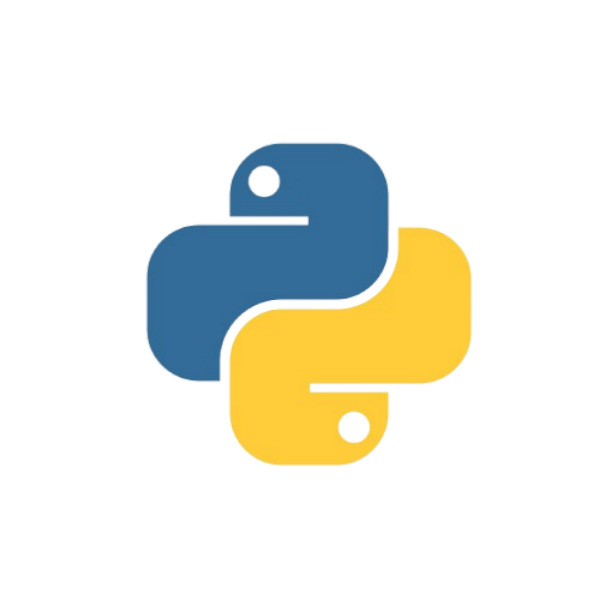
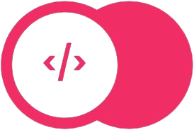
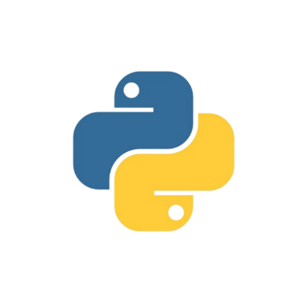

About Me 🚀
I am RangerDev, (aka Meer, Ranger). I am a web developer who started coding when I was 12 and I have come a long way since. I love building websites and designing user interfaces for fun. Here are some facts about me:
🎉 I am years old
🎓 I am in
⚽ I love to play soccer
🎮 I love to play video games
🎨 I love to make Figma UI designs
🚲I love to ride my bike when the weather is good
🎵 I love to listen to music
🚗 I love Audi cars


 


